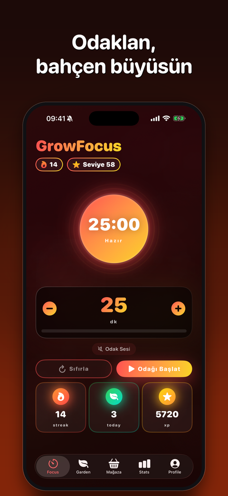
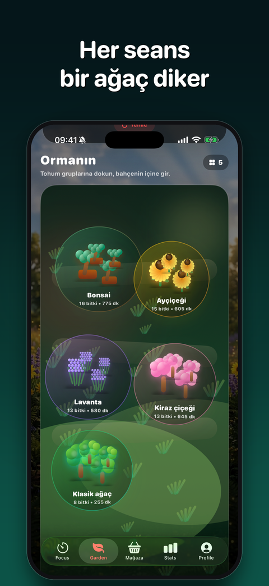
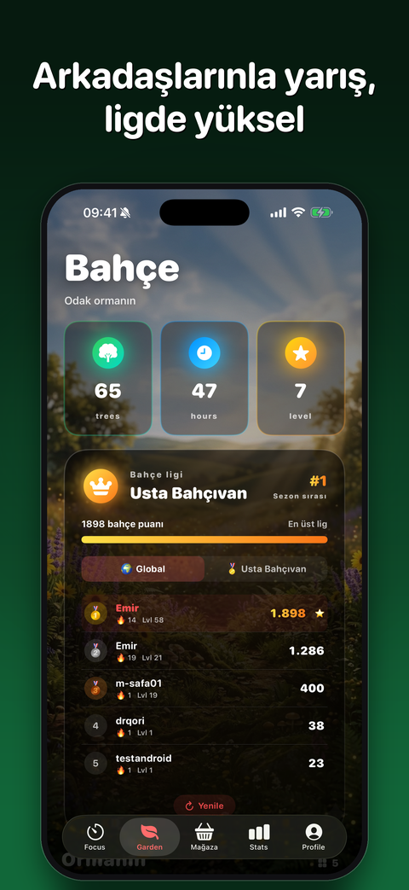
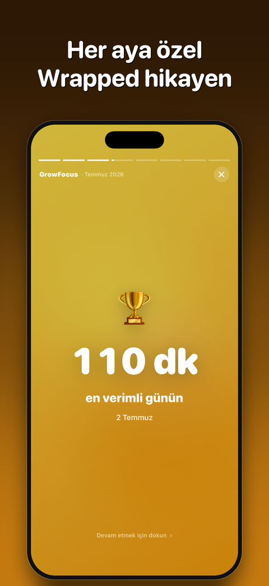
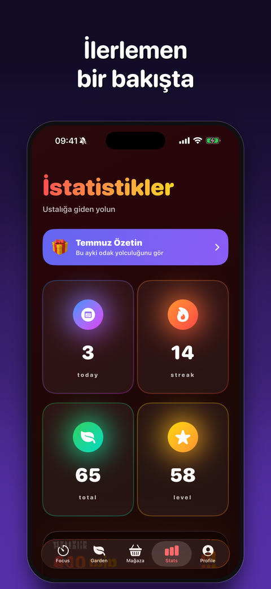
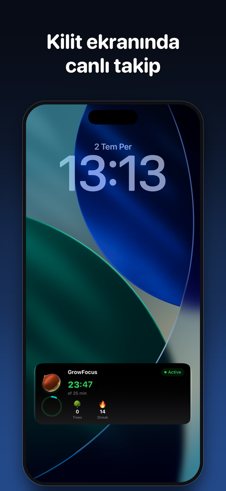
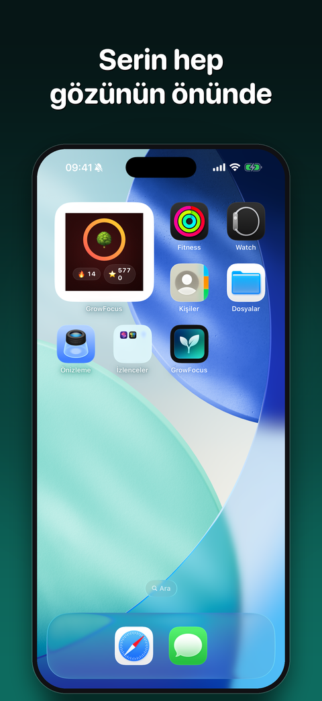
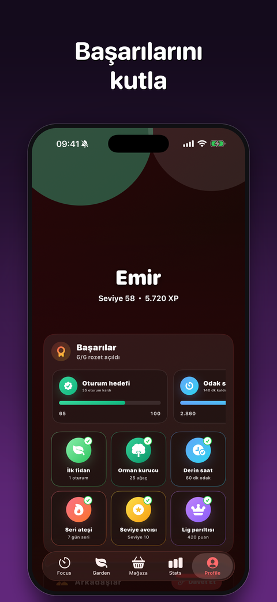
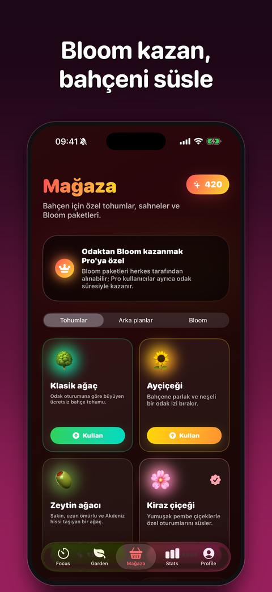
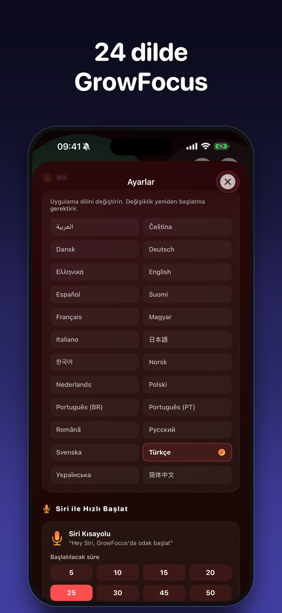

Odaklan,
bahçen büyüsün
Her tamamlanan odak seansı bir ağaç diker. Ormanın, emeğinin kanıtı olur.
iPhone için • Pro aboneliği isteğe bağlıOdaklanmak hiç bu kadar keyifli olmamıştı
GrowFocus, kanıtlanmış Pomodoro tekniğini yaşayan bir bahçeyle birleştirir. Sen odaklandıkça bahçen büyür.
Odaklan ve Dik
5-120 dakika arası esnek seanslar. Her tamamlanan seans bahçene bir ağaç ekler.
Seni Tanıyan Zeka
Cihaz üstü yapay zeka en verimli saatini öğrenir, sana ideal odak süresini önerir. Verilerin cihazından çıkmaz.
14 Odak Sesi
Yağmur, okyanus, kafe, şömine, binaural ritimler… Arka planda kesintisiz çalar.
Bahçe Ligi
Filiz'den zirveye beş lig. Arkadaşlarınla yarış, liderlik tablosunda yüksel.
Aylık Wrapped
Her ay sonunda kişisel odak hikayen: en verimli günün, favori saatin, odak persona'n.
Siri ile Başlat
"Hey Siri, GrowFocus odak başlat" — uygulama açılmadan seans başlar. Action Button desteğiyle.
Pro Odak Modu
Dikkat dağıtan uygulamaları odak sırasında engelle. Odaktan kopunca ödülün azalır.
Widget ve Canlı Etkinlik
Serin ve ilerlemen kilit ekranında, Dynamic Island'da ve ana ekran widget'ında.
Uygulamadan kareler
Sıcak, canlı ve seni içine çeken bir tasarım.










GrowFocus Pro
Potansiyelinin tamamını keşfet.
- 📊 Derin analizler: saat dağılımı, aktivite haritası, kişisel içgörüler
- 🚫 Pro Odak modu ile uygulama engelleme
- 🎨 Özel temalar
- ✨ Tamamen reklamsız deneyim